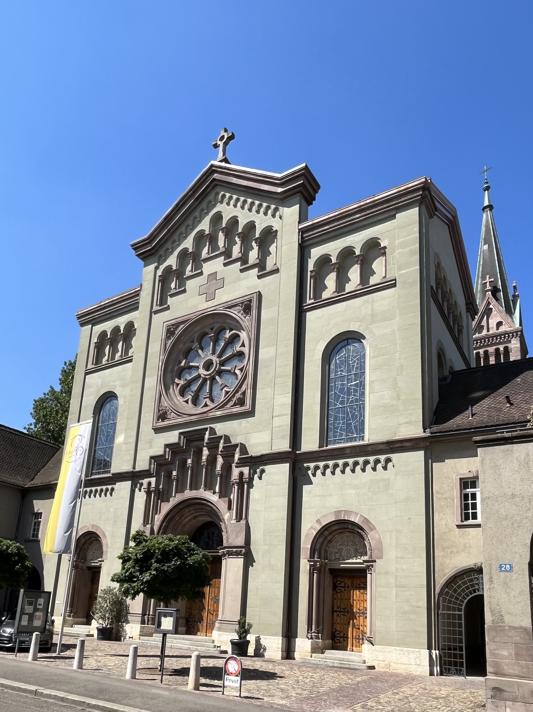
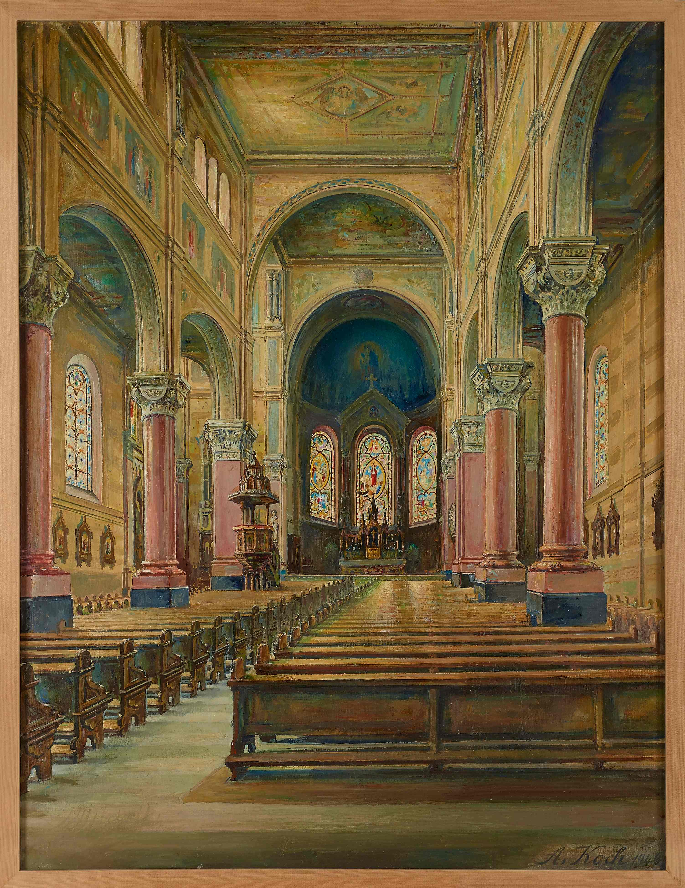
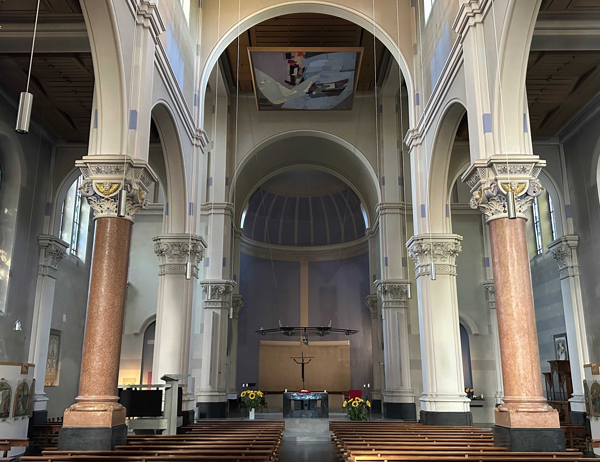

Zur Zeit der Auseinandersetzung zwischen liberalem Staat und konservativer römisch-katholischer Kirche kam es in Basel 1884 zu einem Nachspiel des Kulturkampfs. In diesem Jahr genehmigte die Mehrheit des Basler Stimmvolks nach heftiger politischer Auseinandersetzung die Aufhebung der katholischen Schule am Lindenberg. Die römisch-katholische Kirchgemeinde konnte den Entscheid verschmerzen, weil nun Gelder für einen dringend benötigten Kirchenbau freiwurden.
Die Bevölkerungssituation
Etwa ein Viertel der damaligen Wohnbevölkerung Basels war katholischen Glaubens, 9000 Katholiken und Katholikinnen in Grossbasel, 8000 in Kleinbasel. Die Mehrheit in Grossbasel sah sich gezwungen, den Gottesdienst in der rechts des Rheins, in Kleinbasel gelegenen Clarakirche, zu besuchen. Als die Bemühungen, die Barfüsserkirche für den katholischen Gottesdienst zu gewinnen, 1881 definitiv scheiterten, nahm der Plan Gestalt an, in Grossbasel eine katholische Kirche zu bauen.
Diskussionen in der Gemeinde
Die römisch-katholische Kirchgemeinde war seit 1876 als Verein organisiert, dessen Vorsteherschaft den Pfarrer Burkard Jurt (1822–1900) in seinem Bauvorhaben unterstützten. Rund 900 Mitglieder fanden sich zu der auf den 16. Dezember 1883 einberufenen ausserordentlichen Gemeindeversammlung ein. Traktandiert war der Kauf eines von Ferdinand Labhardt-Schubiger (1824–1892) angebotenen Areals an der Holbeinstrasse, im Grossbasler Stadtteil ‹Am Ring›. Nach eingehender Diskussion genehmigte die Versammlung den Kaufvertrag, sodass einer Realisierung des Bauprojekts nichts im Weg stand. Am 22. Mai 1884 erfolgte die Grundsteinlegung. 1885 wählte man – mit Bezug auf das Basler Münster vor der Reformation – die Muttergottes Maria zur Patronin der entstehenden Kirche. Patronatsfest sollte der 8. Dezember sein, das Fest der Unbefleckten Empfängnis Mariens. Am 23. Mai 1886 weihte der Bischof von Basel Friedrich Fiala (1817–1888) die Marienkirche ein.
Aussenansicht der Marienkirche, von Nordosten, 2023. (Bild: Cyrill Schmiedlin)
Die Kosten für Bauland und Kirchenbau wurden 1886 auf rund 560'000 Franken veranschlagt. Erstaunlich mutet an, dass dank der Spendefreudigkeit der katholischen Bevölkerung und dank erfolgreicher Bettelreisen Pfarrer Jurts in seine luzernische Heimat zur Zeit der Kirchweihe bereits zwei Drittel der Bauschuld abgetragen waren. Erst jetzt beschloss man, auf das Legat einer verstorbenen reichen Basler Konvertitin, der Malerin Emilie Linder (1797–1867), zurückzugreifen. Das Legat von nunmehr 62'000 Franken wurde zwischen 1887 und 1889 gemäss den Intentionen der Stifterin in die Kirchenbaukasse der Marienkirche überwiesen.
Architektur der Marienkirche
Der für den Bau verantwortliche Basler Architekt Paul Reber (1835–1908), der in der Detailplanung mit Rudolf Heinrichs (1851–1897) zusammenarbeitete, liess sich durch den Dom zu Speyer inspirieren und wählte für die Marienkirche den romanischen Stil. Den Bau konzipierte er als dreischiffige, flachgedeckte Säulenbasilika, mit Querschiff und abschliessender Chorapsis, die links durch die Sakristei und rechts durch einen spitz zulaufenden Turm flankiert wird. Wegen der topographischen Verhältnisse wurde die Marienkirche nach Westen ausgerichtet. Man betritt sie von Osten her durch das dem Kirchenschiff vorgelagerte Westwerk.
Polychrome Ausstattung der Marienkirche, Öl auf Leinwand, von August Koch, 1946. (Bild: Staatsarchiv Basel-Stadt, SMM Inv. Koch 1968.16)
Das Kircheninnere früher und heute
Die heutige Ausstattung ist grundverschieden von der früheren, neobyzantinisch geprägten Auslegung des Kircheninnern. Die ursprünglichen fünf Altäre mit ihren Aufbauten, die alten Glasgemälde und Wandmalereien blieben fast 70 Jahre erhalten. Als eine Modernisierung unumgänglich erschien, gründete man 1952 einen Verein für die Renovation der Marienkirche. Der Verein beauftragte nach einem Wettbewerb 1958 den Zürcher Architekten Fritz Metzger (1898–1973), den Innenraum den «seelsorgerischen und liturgischen Anforderungen» der Zeit anzupassen. Die purifizierende Renovation zeitigte als wichtigstes Ergebnis die Platzierung des Altars in die Vierung, den Schnittpunkt von Haupt- und Querschiff, sowie eine farbige Neuverglasung der Fenster 1961/1962 nach den Entwürfen des Basler Glasmalers Coghuf (Ernst Stocker, 1905–1976).
Innenansicht der Marienkirche, Blick gegen den Chor, 2023. (Bild: Adriana Basso Schaub)
Ein Brand im Jahr 1983 wurde zum Anlass, einige Massnahmen der radikalen Renovation zurückzunehmen. Die vier monolithischen Rundsäulen aus Veroneser Marmor erhielten nach einer Reinigung wieder ihre natürliche, rötliche Farbe. Die Monochromie des Innenraums wurde neu durch diskrete Farbstreifen in Blau aufgebrochen, welche die Abstufungen zwischen den Wandflächen akzentuieren. Seit 1985 hängen die alten Kreuzwegstationen von Franz Joseph Simmler (1846–1926) in einfacher Rahmung wieder in der Kirche. Nach allgemeinem Urteil bietet die heutige Marienkirche den Besuchern und Besucherinnen eine geglückte Verbindung neoromanischer Architektur mit einer zeitgenössischen Innenausstattung, in der auch ältere, dem Historismus verpflichtete Ausdrucksformen ihren Platz finden. Die in der Marienkirche sich darstellende Verbindung der älteren Ausdrucksformen mit moderner religiöser Kunst widerspiegelt den geschichtlichen Weg der Römisch-Katholiken in Grossbasel: den Weg einer Ortskirche aus dem «Ghetto» der Kulturkampfzeit zur heutigen Ökumene.
Patrick Braun, Dr. phil., ist freischaffender Historiker und war 1977–2007 Redaktionsmitglied der Helvetia Sacra in Basel.
Weitere Artikel von {{ author.author }} finden Sie hier:
Zur Vertiefung:
- Meles, Brigitte: «Die künstlerische Ausgestaltung der Marienkirche in Basel», in: Braun, Patrick/Gampp, Axel Christoph (Hgg.), Emilie Linder (1797–1867). Malerin, Mäzenin, Kunstsammlerin, Basel 2013, 243–263.
- Schulz-Rehberg, Rose Marie: Architekten des Klassizismus und Historismus. Bauen in Basel, 1780–1880, Basel 2015, 189–194.